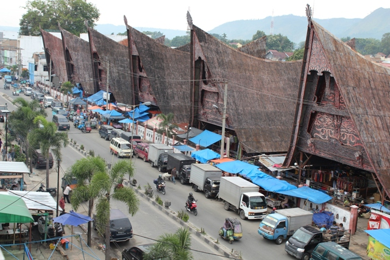

Penjelasan
Balige adalah sebuah kota di provinsi Sumatera Utara Indonesia dan merupakan ibu kota Kabupaten Toba. Jaraknya 240 kilometer dari Medan. Balige juga menjadi tempat wisata melihat Danau Toba, danau kawah terbesar di dunia. Balige berjarak 60 kilometer dari Parapat. Di Balige, terdapat banyak orang dengan asal usul suku Batak.Nama belakang atau 'Marga' seseorang merupakan bagian penting seseorang dalam subkultur Batak mana pun. Orang Batak selalu mempunyai nama keluarga. Nama marga atau nama keluarga diperoleh dari garis keturunan ayah (paternal) yang selanjutnya akan diwariskan kepada keturunannya secara terus menerus.